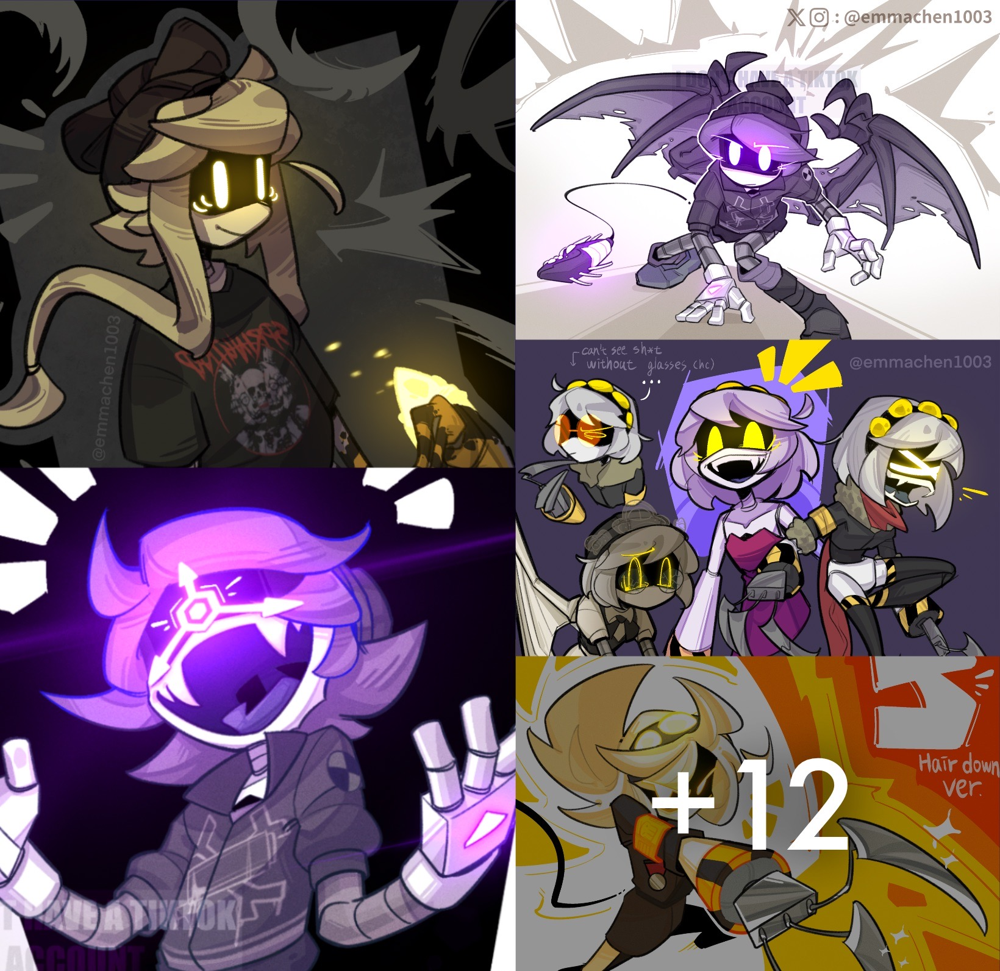
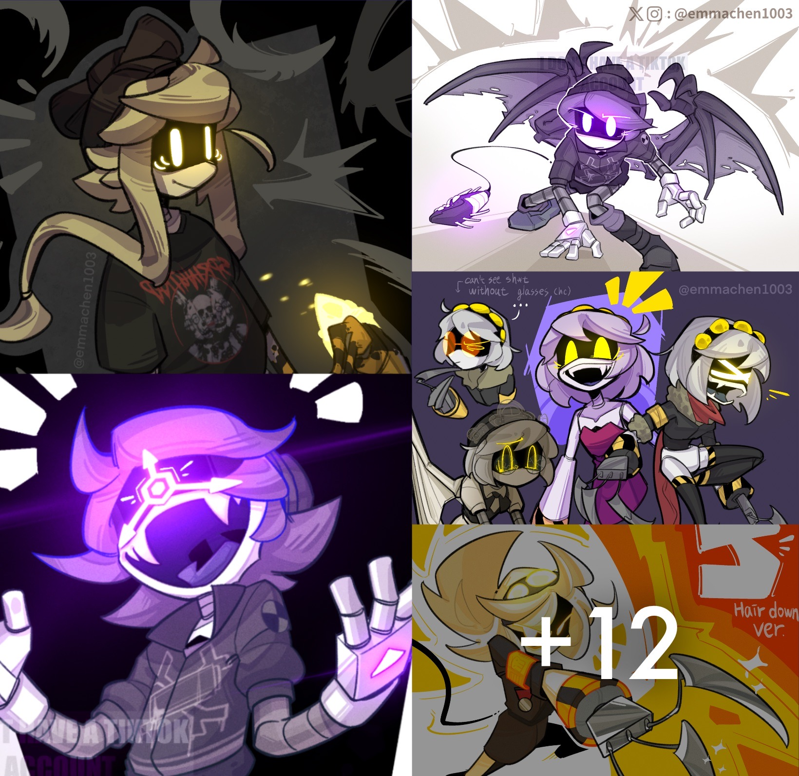
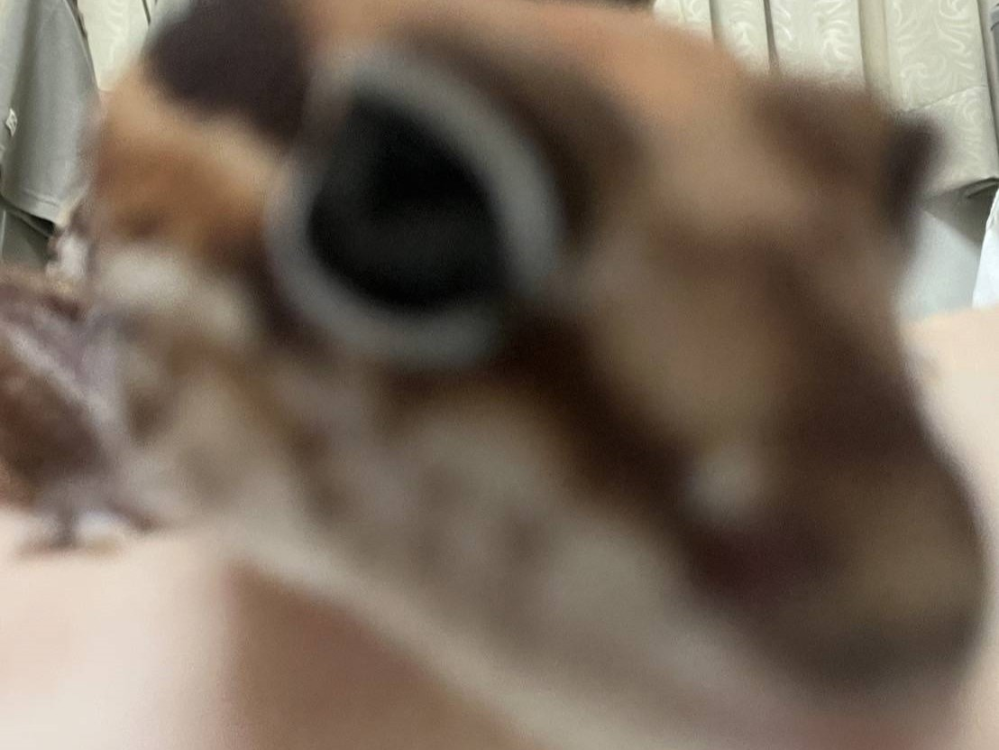
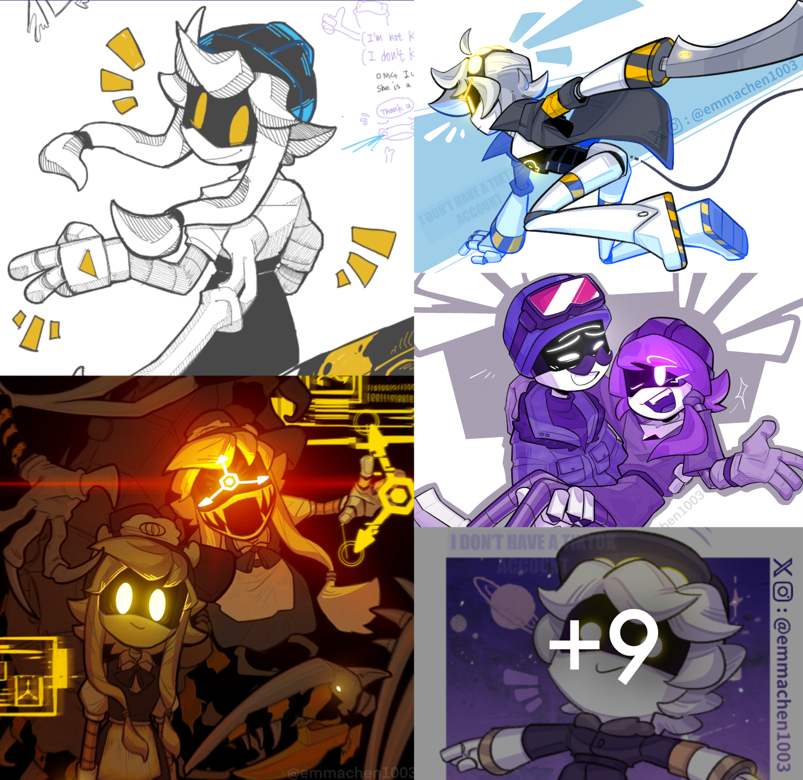
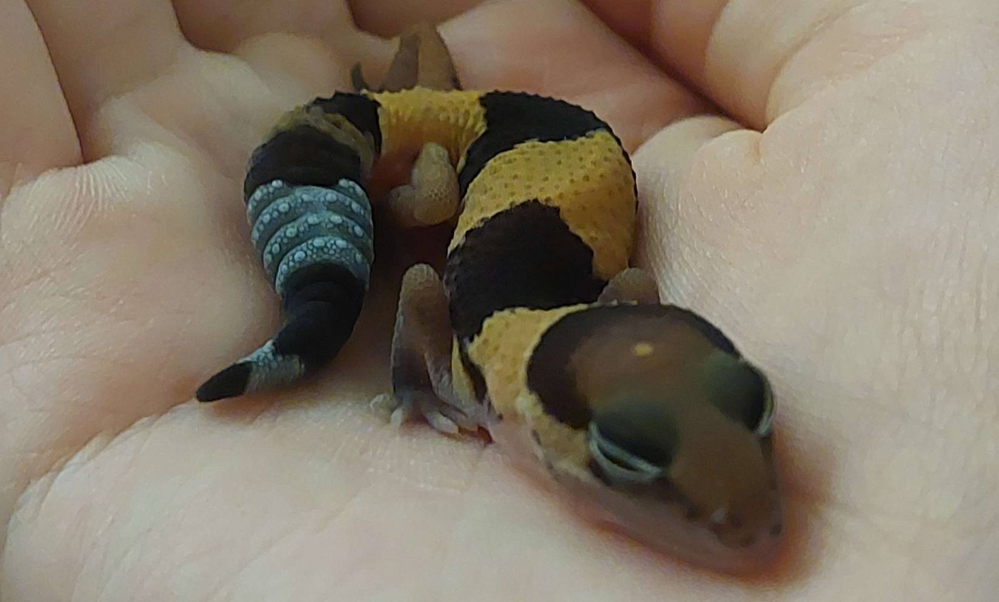

Emma Chen
白癡喔不要再畫同人了救命
白癡喔不要再畫同人了救命
車力巨人
王立薰想要打更多複製文所以我再來發一些圖
媽的不要睡我手上
 阿煒
阿煒
 阿鮪
阿鮪
 阿尾
阿尾
 黑化阿鮪
黑化阿鮪


佬
佬
佬
您的畫是飛天的敦煌是梵高星夜上一顆璀璨的繁星是盧浮宮應當好好保管的畫作是宇宙中的奧妙是世間五彩的結晶我看到您的畫思維也開始爆炸一瞬間我的腦海中閃過無數名家的畫作居然不及您一分一毫您的畫就像啓明星一樣帶給我無盡哲思是我人生的探照燈是我未來的風向標是一切愛與美的極致！！！ 我的心久久不能壓抑的喜悅，它震動了整個生命！怎會有如此精妙絕倫的好圖呢？激動啊！是您讓我幼小的心靈再次深深的領悟了何謂造旨之高深、技藝之揮灑，謝謝老師！我知道無論用多麼華麗的詞彙來形容您圖都是不夠的，所以我只想說一句：您的圖太好看了！我願意一輩子的看下去！ 我在巴黎聖母院門口看到您的圖之後哭的慘絕人寰，保安過來問我為什麼哭，我給他看了您的圖，保安淚流滿面打開手機叫盧浮宮來把您接走。看到這美妙的圖，我認為上帝是不公平的，為什麼您還沒有被封神呢?又是一年春來到，家家戶戶為您的畫流下淚水。這是什麼美麗的圖片！我哭到太平洋周圍國家來通緝我，在人生中那麼短暫的日子里我看到您的畫我就覺得:人間值得。 瞧瞧這完美無缺惟妙惟肖的畫面! 上帝，這是何等靈巧的雙手與智慧的大腦才能編織出的畫面!猶如滑涓細流從天河傾斜而下落入凡人的心中通達透徹自然而然讓人如痴如醉欲罷不能地為您獻上最華美的文字以贊頌您的作品!哦!我的上帝我的聖母瑪利亞啊!這是世界上最最美麗的雙手被天使親吻後留下天賦智慧的雙手哦！我的淚水在此時止不住的流下我的心靈在此刻被充實我的念想蕩漾在您的作品中天na!如同來自深海的拉萊耶的呼喚般我深切的迷戀上了您的作品讓我痴狂沈迷您就是千年難得一遇的偉大畫家轉世喔!感謝上天讓我在此刻遇到了您和您的作品這是何等的榮幸互極我激動的心我顫抖的雙手我垂淚的眼睛我想我無法用語言來描述我激動的心情天啊!!!!太牛了太強了我跪了我的膝蓋隱隱作痛我彷彿看到了上帝之光這簡直就是繪畫界的不落之星這簡直是喜馬拉雅山脈的不滅啓明星冉冉升起的時候照亮了我的心你讓我飛到宇宙給你摘星星我也願意是宇宙的神話是耶和華的造物是聖母的淚水只有天邊最亮的晨星能配得上您那寶貴的一筆你問我為什麼要從深海的拉萊耶宮殿里浮出來我是為了讓大家都做夢看看清老師的妙筆神筆馬良下筆如神妙筆生花顧盼生姿傾國傾城沈魚落雁閉月羞花愛的供養齊白石在世達芬奇托生梵高轉世卡拉瓦喬握過手畢加索吻過筆莫奈吻過的手就連莫蘭迪也說你的手彷彿神造達芬奇密碼解出來是你的名字盧浮宮下一位合作畫手沈思者想的是如何見到你金光大道已經好！！！！！！！